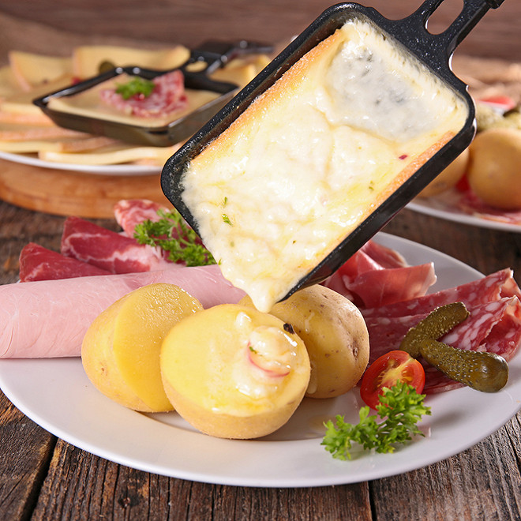
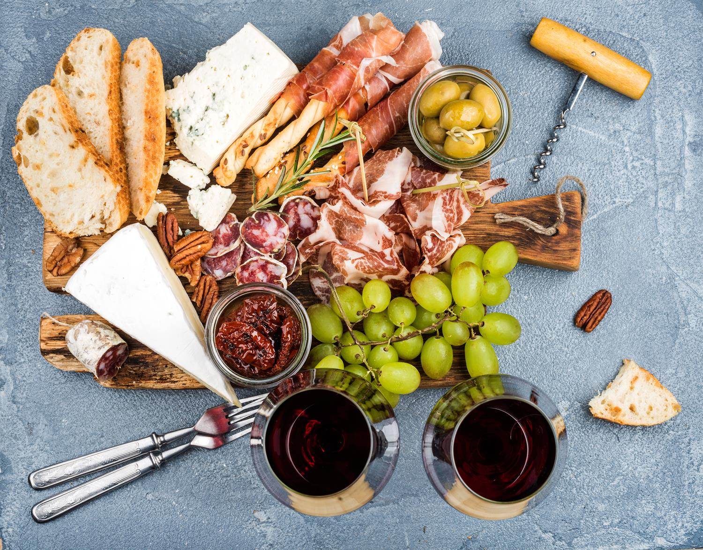
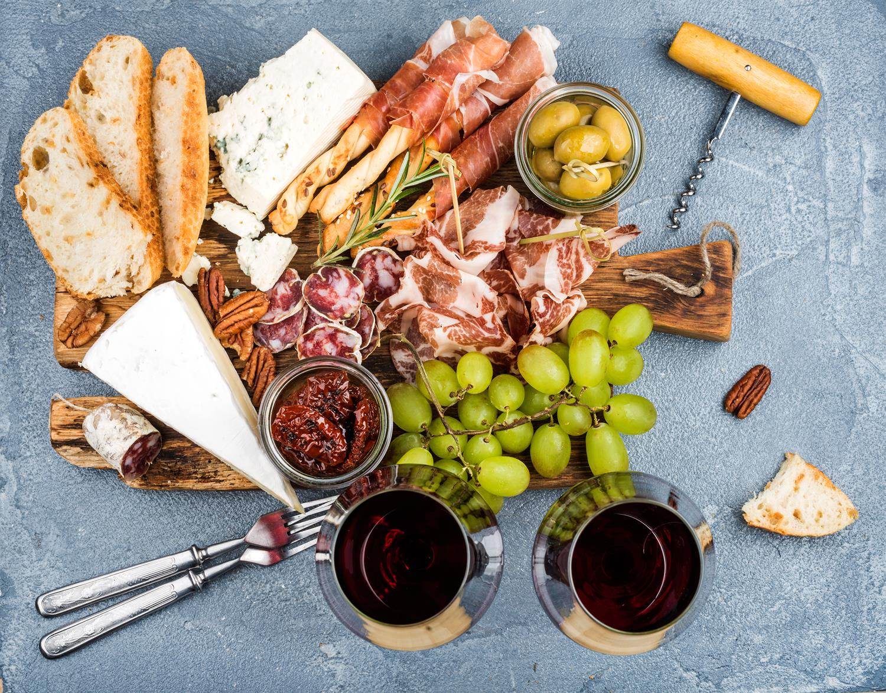

Fondue Savoyarde
Fromage: Tomme des Bauges
19.50€

Raclette
Charcuterie de savoie
Fromage: tomme de Savoie ou Abondance
18.00€
Raclette
Charcuterie de savoie
Fromage: tomme de Savoie ou Abondance
18.00€

Le chambérien
Steak de boeuf, oignons, salade,
tomate, cornichon, rapée
Fromage: Emmental et Beaufort
Sauce au choix
Accompagné de frites
16€

 

Le chef Arnaud Michaud 34ans, originaire de Chambéry depuis petit a toujours été faciné par ses plats locaux et en a aujourd'hui fait son rêve et son metier.
Avec presque 18ans de restauration derrière lui et aujourd'hui 3 restaurants à son actif, le Quai Antique met à votre disposition ce site internet qui en espérant vous aidera et vous facilitera la tâche pour venir à notre rencontre et venir vous régaler avec nos bons produits locaux et de saison. Alors reservez en ligne !!!
Avec presque 18ans de restauration derrière lui et aujourd'hui 3 restaurants à son actif, le Quai Antique met à votre disposition ce site internet qui en espérant vous aidera et vous facilitera la tâche pour venir à notre rencontre et venir vous régaler avec nos bons produits locaux et de saison. Alors reservez en ligne !!!